Que telescópio a gente precisaria para ver um T-Rex vivo?
O artigo do vídeo de 3 de novembro de 2026, com as figuras e um mapa mental no fim. Leitura de 6 minutos.
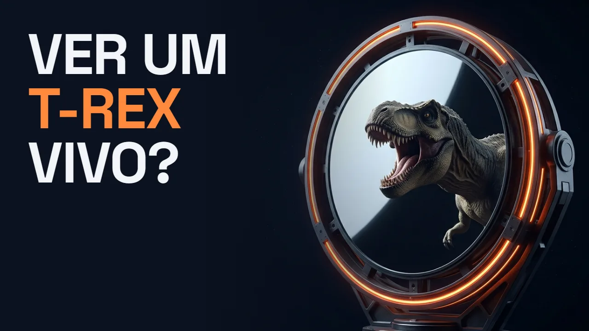
O player do YouTube só carrega quando você clica. Abrir no YouTube
Em uma frase: nenhum telescópio possível: mesmo chegando a 67 milhões de anos-luz por um atalho, o espelho precisaria ter 4,5 anos-luz de largura para ver o T-Rex como um pontinho de 10 m (45 anos-luz para detalhe de 1 m), e um espelho desses, com vidro de 1 mm, pesaria umas 1.800 vezes todo o Sistema Solar.
A luz que bateu num Tiranossauro, 67 milhões de anos atrás, ainda existe. Ela não se perde no vácuo: saiu da Terra, atravessou a galáxia e continua viajando. Hoje está mais ou menos na distância do aglomerado de galáxias de Fornax, a uns 62 milhões de anos-luz. Quem estivesse lá e apontasse um telescópio para cá não veria cidades. Veria o fim do Cretáceo.
A pergunta parece de ficção científica, mas dá para responder com contas de física básica: dá para ir até lá, virar para trás e assistir a um T-Rex andando?
Correr atrás da luz não adianta
Nada com massa chega à velocidade da luz, mas, na teoria, dá para chegar perto. E perto da luz o tempo de quem viaja passa mais devagar. Para os 67 milhões de anos-luz caberem em 30 anos de bordo, o fator de dilatação do tempo (γ) teria que ser de uns 2,2 milhões.
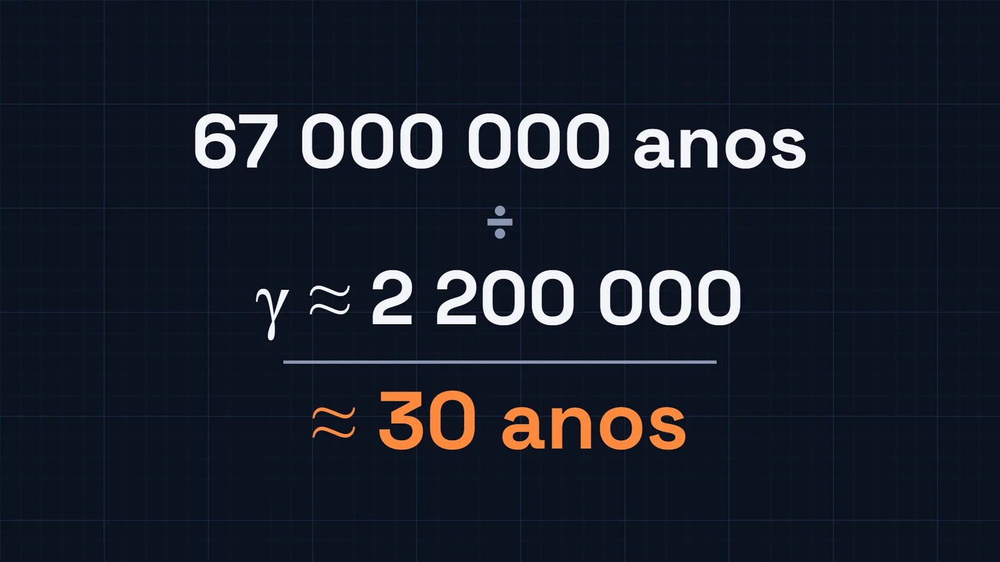
Dá para apertar mais. Com uns 30 noves depois da vírgula (1 − v/c ≈ 10⁻³¹), a viagem inteira duraria 1 segundo para quem está na nave. Na velocidade exata da luz, o tempo de bordo seria zero, mas essa velocidade é proibida para qualquer coisa com massa. E chegar perto custa caro: levar uma pessoa de 70 kg nessa viagem de 1 segundo pediria a energia que o Sol produz em um ano inteiro.
Agora a parte curiosa. Na viagem de 30 anos, você chega, vira para trás e olha para a Terra. Não vê o T-Rex. Vê a Terra uns 3,5 minutos depois da sua partida.
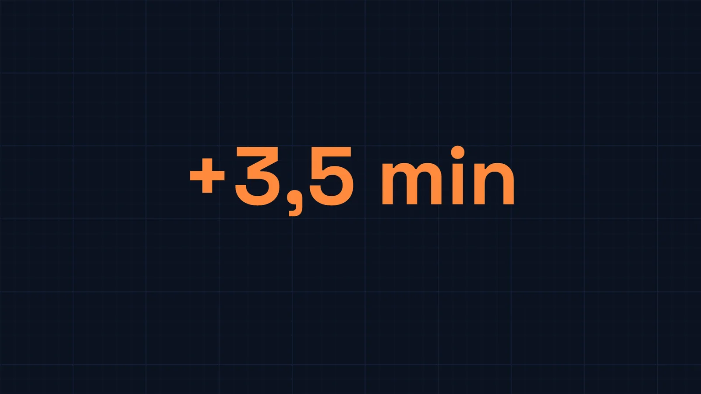
É uma corrida. A luz da sua partida saiu junto com você e foi um tiquinho na frente o tempo todo. A luz do T-Rex saiu 67 milhões de anos antes, e essa vantagem nenhuma nave tira.
E o espaço não é vazio: entre as estrelas há, em média, cerca de um átomo de hidrogênio por centímetro cúbico. Com γ de 2,2 milhões, cada próton bate na nave com uns 2,1 PeV, umas 300 vezes a energia de um próton do LHC.
As trapaças: o atalho funciona, a máquina do tempo não
Com um buraco de minhoca, ou com o teletransporte do Goku, você aparece lá num piscar de olhos e a luz do Cretáceo está chegando em você.
A máquina do tempo tem uma pegadinha. Se você vai até lá devagar e volta 67 milhões de anos no tempo, a luz do T-Rex está acabando de sair da Terra. Ela ainda tem a viagem toda pela frente.
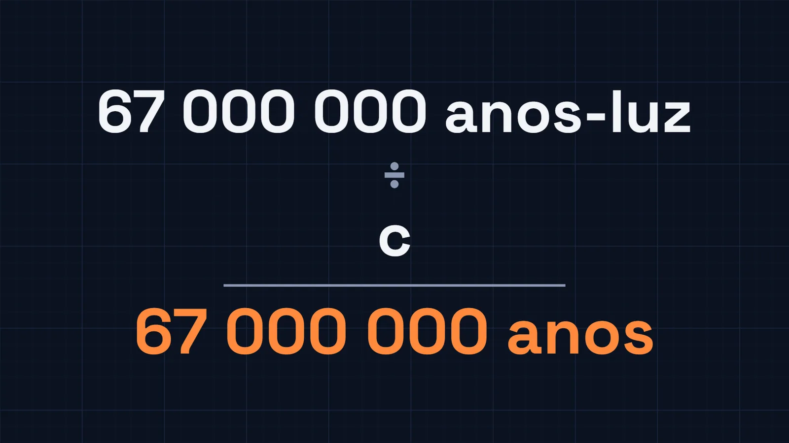
Ter a luz chegando não é a mesma coisa que conseguir ver alguma coisa com ela. É aí que o problema de verdade começa.
Primeiro problema: quase nenhuma luz
A luz não enfraquece porque cansa. Enfraquece porque se espalha: a mesma luz cobre uma área que cresce com o quadrado da distância.
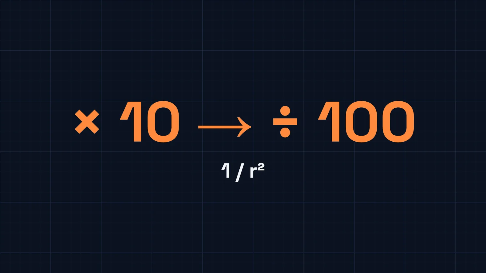
Um T-Rex ao sol devolve mais ou menos a luz de 700 lâmpadas de LED de casa. A 67 milhões de anos-luz, isso dá uns 2 × 10⁻²⁷ fótons por segundo em cada metro quadrado. O maior telescópio de luz visível em construção, o ELT, no Atacama, tem um espelho de 39 m, a altura de um prédio de 13 andares. Ele pegaria um fóton do T-Rex a cada milhão de vezes a idade do universo.
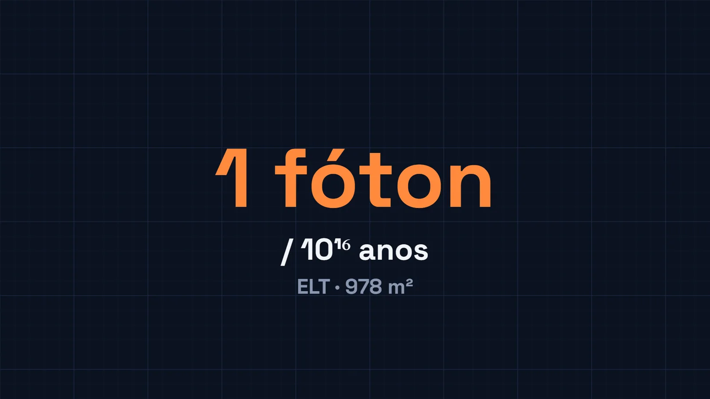
Memória de cálculo: a luz
- Luz refletida (estimativa)
- ~20 m² × ~500 W/m² × ~20% ≈ 2.000 W
- Lâmpada de LED de 9 W
- ~2,7 W de luz visível
- Fótons de 550 nm
- 2.000 W ÷ 3,6 × 10⁻¹⁹ J ≈ 5,5 × 10²¹ por segundo
- Por m², a 6,34 × 10²³ m
- 5,5 × 10²¹ ÷ (2π L²) ≈ 2,2 × 10⁻²⁷ por segundo
- No ELT (978 m²)
- ≈ 1 fóton a cada 1,5 × 10¹⁶ anos
~1 milhão de vezes os 13,8 bilhões de anos do universo
Segundo problema: a nitidez
Mesmo com luz de sobra, receber luz não é ver um bicho nela. Todo telescópio tem um limite de nitidez que vem do tamanho da abertura: a luz passa por um buraco e se abre um pouco do outro lado (difração). Quanto menor a abertura, mais borrada a imagem. É o critério de Rayleigh.
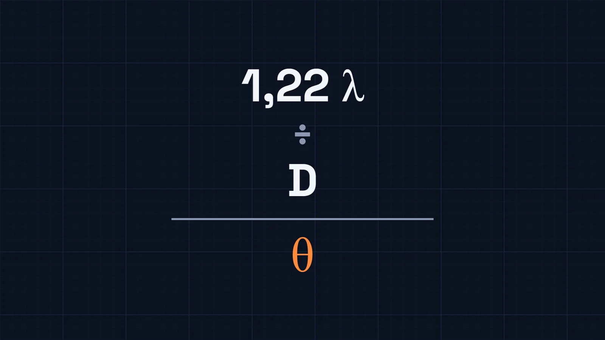
Para ver o T-Rex inteiro como um único pontinho de 10 m, o espelho precisaria de 4,5 anos-luz de largura, mais que a distância até Próxima Centauri, a estrela mais próxima do Sol (4,24 anos-luz). Para ver a cabeça, as pernas e a cauda separadas, com detalhe de 1 m, o espelho passa para 45 anos-luz.
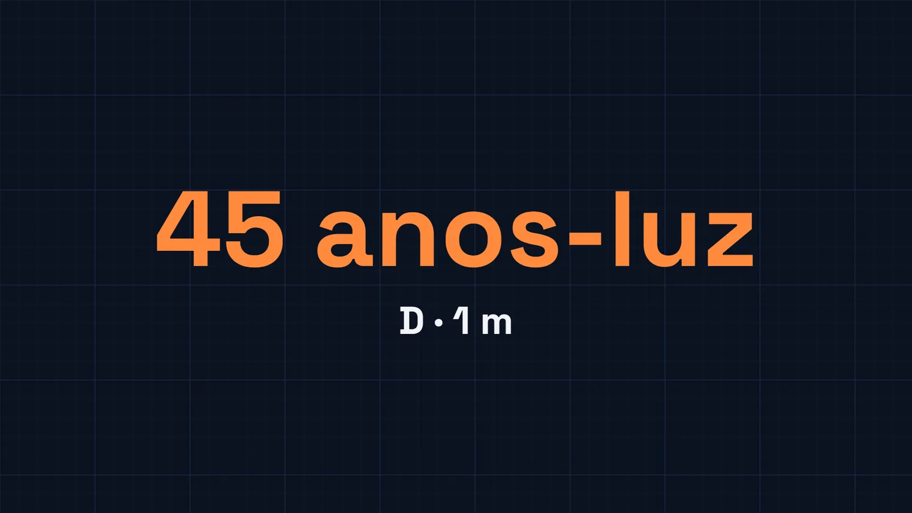
O espelho que não cabe no universo próximo
Fique com o menor, o de 4,5 anos-luz, e faça o vidro fino, de 1 mm. Mesmo assim ele pesaria umas 1.800 vezes tudo o que existe no Sistema Solar. Não existe tanto vidro, nem tanta matéria por perto.
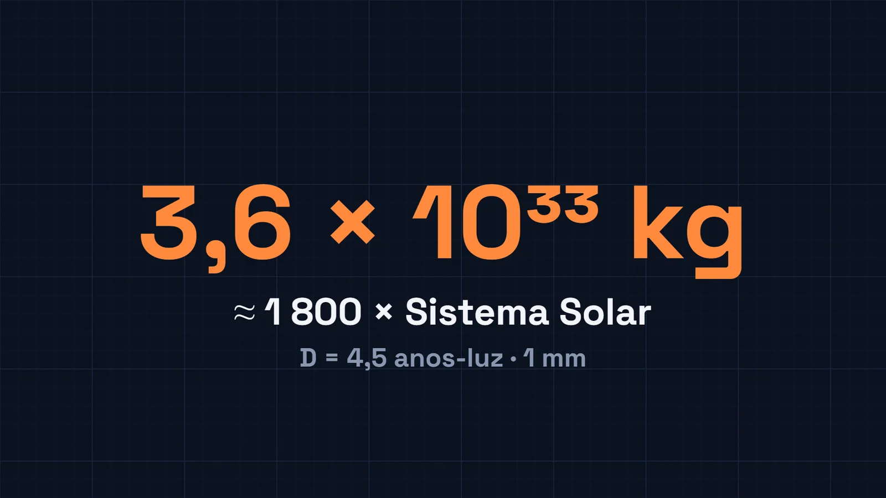
O curioso é que esse espelho impossível resolveria os dois problemas de uma vez: com essa área, ele pegaria uns 3 milhões de fótons do T-Rex por segundo.
Memória de cálculo: o espelho
- Diâmetro (x = 10 m)
- 1,22 × 550 nm × 6,34 × 10²³ m ÷ 10 m ≈ 4,25 × 10¹⁶ m
- Área
- π × (2,13 × 10¹⁶ m)² ≈ 1,42 × 10³³ m²
- Massa (1 mm, 2.500 kg/m³)
- ≈ 3,6 × 10³³ kg
- Sistema Solar
- ≈ 1,99 × 10³⁰ kg
- Fótons coletados
- 1,42 × 10³³ m² × 2,2 × 10⁻²⁷ ≈ 3 × 10⁶ por segundo
~1.800 vezes
O truque que já funcionou, e por que não serve aqui
Em 2019 saiu a primeira foto de um buraco negro, no centro da galáxia M87, a uns 55 milhões de anos-luz, quase a distância do nosso T-Rex. Ninguém construiu uma antena gigante: o Event Horizon Telescope juntou radiotelescópios do Havaí ao Polo Sul, funcionando como um telescópio do tamanho da Terra, em ondas de 1,3 mm.
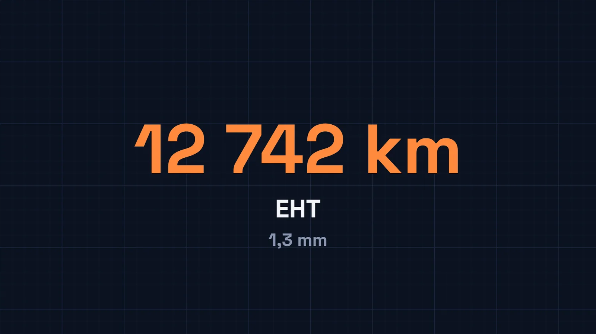
O anel de luz em volta do buraco negro mede uns 42 microssegundos de arco, umas 700 unidades astronômicas, 12 vezes a largura da órbita de Netuno. A interferometria resolve a nitidez, porque ela vem da distância entre as antenas. Mas não resolve a luz, que depende da área das antenas, e elas continuam pequenas. Para o buraco negro funcionou porque o alvo era gigantesco e brilhante. O T-Rex devolve a luz de 700 lâmpadas.
Então a resposta é não
Sem nave, sem buraco de minhoca e sem Goku, a gente nunca vai ver um T-Rex andando. Não por falta de luz chegando, mas porque juntar essa luz pede um espelho maior que a distância até outra estrela. A luz dele, porém, continua lá fora, junto com a de cada dinossauro e de cada floresta do Cretáceo, viajando a 300 mil km por segundo. E a nossa também.
Bônus: o vídeo inteiro num mapa mental
As seis ideias do vídeo numa imagem só, para revisar ou mostrar para alguém.
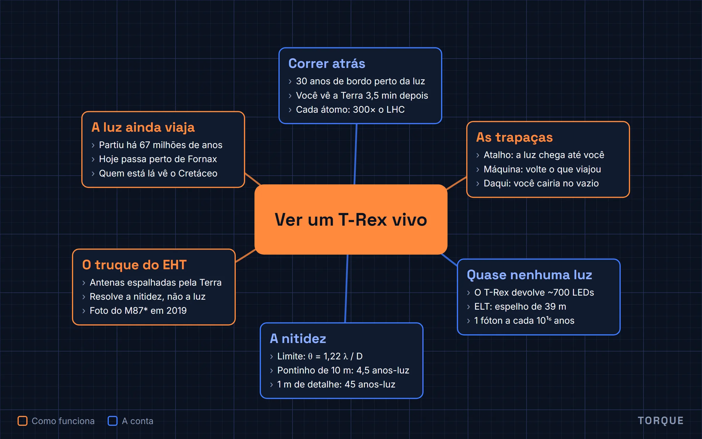
Fontes
- Hutchinson e Holtz, UC Museum of Paleontology; Fowler et al. (2011): o T. rex viveu no Maastrichtiano, há ~68 a 66 milhões de anos
- Blakeslee et al. (2009), ApJ 694, 556: distância do aglomerado de Fornax (~19 Mpc)
- Einstein (1905) e Taylor e Wheeler, Spacetime Physics: dilatação do tempo
- Ferrière (2001), Rev. Mod. Phys. 73, 1031: densidade do meio interestelar
- CERN: prótons de 6,8 TeV no Run 3 do LHC
- IAU (2015, resolução B3): luminosidade do Sol, 3,828 × 10²⁶ W
- ESO, Extremely Large Telescope: espelho de 39 m, ~978 m² de área coletora
- Planck Collaboration (2018): idade do universo, 13,8 bilhões de anos
- Hecht, Optics: critério de Rayleigh
- Gaia DR3: distância de Próxima Centauri (4,24 anos-luz)
- Event Horizon Telescope Collaboration (2019), ApJL 875, L1: a foto do M87*, a 16,8 Mpc, anel de 42 ± 3 µas
- Thompson, Moran e Swenson, Interferometry and Synthesis in Radio Astronomy